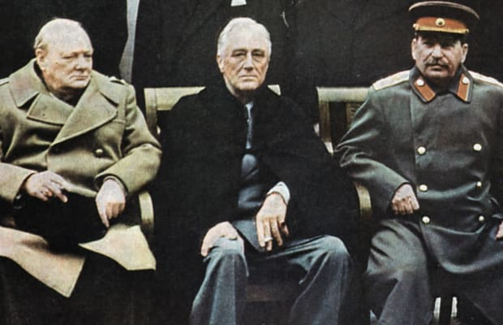

The Second World War

EN
The Second World War
EN
The Second World War
The Second World War was a global war that lasted from 1 September 1939 to 2 September 1945. It involved the vast majority of the world's countries forming two opposing military alliances: The Allies (France and Britain, and later Russia and USA) and the Axis powers (Germany, Italy and Japan). Like anything, this war has a reason to happen. The three main causes of the Second World War were:
The beginning of the war
 World War II is generally considered to have begun on 1 September 1939, when Nazi Germany invaded Poland with the help of Soviet Union. Then France and the United Kingdom declared war on Germany just 2 days after the invasion. In the beginning of the war, more or less nothing had happened. There were attempts for small invasion from France and UK towards Nazi Germany but they were a failure. Then UK tried to stop Sweden and Norway from exporting essential materials to Germany. And the best moment was when Soviet Union attacked Finland. The UK and France landed troops in Norway and wanted to move them across Sweden to help Finland against Soviet Union and then along the way try to take control of Sweden and stop the exportation to Germany. Hitler realised what is the plan of the Allies and quickly moved to secure his supply of iron ore and launched an invasion through Denmark into Norway and the Allies had to retreat. And after this failure of the UK, Chamberlain resigned and was replaced with Winston Churchill. His inspired leadership united the people of Britain against Nazi Germany and its allies.
World War II is generally considered to have begun on 1 September 1939, when Nazi Germany invaded Poland with the help of Soviet Union. Then France and the United Kingdom declared war on Germany just 2 days after the invasion. In the beginning of the war, more or less nothing had happened. There were attempts for small invasion from France and UK towards Nazi Germany but they were a failure. Then UK tried to stop Sweden and Norway from exporting essential materials to Germany. And the best moment was when Soviet Union attacked Finland. The UK and France landed troops in Norway and wanted to move them across Sweden to help Finland against Soviet Union and then along the way try to take control of Sweden and stop the exportation to Germany. Hitler realised what is the plan of the Allies and quickly moved to secure his supply of iron ore and launched an invasion through Denmark into Norway and the Allies had to retreat. And after this failure of the UK, Chamberlain resigned and was replaced with Winston Churchill. His inspired leadership united the people of Britain against Nazi Germany and its allies.
 Hitler's overall strategy was similar to Germany's WW1 strategy called blitzkrieg. To attack and defeat France, knocking out the UK in the process, then turn on the Soviet Union and win the war. Hitler started his strategy as he invaded Belgium so he could later on invade France from the north. The Germans managed to win against the Allies and breezed through France, taking Paris, the capital of France, and then France fell. Hitler hoped that with the fall of France, the UK would lose hope and sue for peace, but it didn't. Hitler needed to secure the Western Front before attacking the Soviet Union. The UK were now all alone and Hitler wanted to emphasise that. Italy finally declared war on the UK. In addition, Hitler allowed France to continue its existence as a German puppet state. This way, it looked like the UK's old ally had decided to switch sides. Hitler began laying down plans for an invasion of Great Britain. But the problem was that before German troops could land on British soil, he would first need air and naval superiority. Waves of German bombers came, but they were stopped by the outnumbnered RAF (Royal Air Force). Then Churchill ordered a small bombing raid over Berlin. It didn't do much damage, but Hitler was furious. The Luftwaffe (the German Air Force) sent one massive all-out attack on London and the RAF successfully repelled it and placing air superiority. Hitler's invasion had to be postponed.
Hitler's overall strategy was similar to Germany's WW1 strategy called blitzkrieg. To attack and defeat France, knocking out the UK in the process, then turn on the Soviet Union and win the war. Hitler started his strategy as he invaded Belgium so he could later on invade France from the north. The Germans managed to win against the Allies and breezed through France, taking Paris, the capital of France, and then France fell. Hitler hoped that with the fall of France, the UK would lose hope and sue for peace, but it didn't. Hitler needed to secure the Western Front before attacking the Soviet Union. The UK were now all alone and Hitler wanted to emphasise that. Italy finally declared war on the UK. In addition, Hitler allowed France to continue its existence as a German puppet state. This way, it looked like the UK's old ally had decided to switch sides. Hitler began laying down plans for an invasion of Great Britain. But the problem was that before German troops could land on British soil, he would first need air and naval superiority. Waves of German bombers came, but they were stopped by the outnumbnered RAF (Royal Air Force). Then Churchill ordered a small bombing raid over Berlin. It didn't do much damage, but Hitler was furious. The Luftwaffe (the German Air Force) sent one massive all-out attack on London and the RAF successfully repelled it and placing air superiority. Hitler's invasion had to be postponed.
Progress of the war
 Later on there were many battles in Africa between the British colonies and the German and the Italian. Great Britain was in a good situation, because America began suppling the Allies with weapons, food and munitions. Hitler realised that and German u-boats were sinking thousands of Allied supply ships in the Atlantic, including American ones. On June 22 1941, with 3 million troops Hitler launched the largest ground invasion of the Soviet Union. Hitler managed for a short period of time to reach Moscow, but he never occupied it, because of the cold. And failure after failure for Hitler, the Soviets started pushing the Wehrmacht backward. The situation also wasn't looking too good for Hitler on the Western Front as the USA joined the war, because of Japan's attack on Pearl Harbour. Slowly, the Germans and the Italians were pushed out of Africa from the UK and USA. Japan's rapid success was also turned around as Japan suffered many fail battles against the USA. The Allies decided that its time to end the war. The first step to the end of the war was to occupy France and then push Nazi Germany from every possible side.
Later on there were many battles in Africa between the British colonies and the German and the Italian. Great Britain was in a good situation, because America began suppling the Allies with weapons, food and munitions. Hitler realised that and German u-boats were sinking thousands of Allied supply ships in the Atlantic, including American ones. On June 22 1941, with 3 million troops Hitler launched the largest ground invasion of the Soviet Union. Hitler managed for a short period of time to reach Moscow, but he never occupied it, because of the cold. And failure after failure for Hitler, the Soviets started pushing the Wehrmacht backward. The situation also wasn't looking too good for Hitler on the Western Front as the USA joined the war, because of Japan's attack on Pearl Harbour. Slowly, the Germans and the Italians were pushed out of Africa from the UK and USA. Japan's rapid success was also turned around as Japan suffered many fail battles against the USA. The Allies decided that its time to end the war. The first step to the end of the war was to occupy France and then push Nazi Germany from every possible side. After many battles, the Germans were pushed out of France. Then the Soviet Union pushed Germany from the east, the UK and the USA pushed Germany from the west and south. Berlin fell and with it Hitler's hopes dreams of a great German Empire. On May 7 1945 German surrendered and this was the end of the World War II in Europe. Japan was left alone but continued to fight. In the end, the Allies decided to drop nuclear bombs over Japan. On August 6th the bomb fell on Hiroshima and then on the 9th Nagasaki. After these nuclear bombs on September 2 1945, the Emperor announced Japan's surrender and the end of the Second World War.
After many battles, the Germans were pushed out of France. Then the Soviet Union pushed Germany from the east, the UK and the USA pushed Germany from the west and south. Berlin fell and with it Hitler's hopes dreams of a great German Empire. On May 7 1945 German surrendered and this was the end of the World War II in Europe. Japan was left alone but continued to fight. In the end, the Allies decided to drop nuclear bombs over Japan. On August 6th the bomb fell on Hiroshima and then on the 9th Nagasaki. After these nuclear bombs on September 2 1945, the Emperor announced Japan's surrender and the end of the Second World War.
Aftermath
 There were around 50-56 million casualties because of the war. Many of them were killed in the concentration camps in Nazi Germany. With the end of World War II finally in sight, the “Big Three” Allied leaders—U.S. President Franklin D. Roosevelt, British Prime Minister Winston Churchill and Soviet Premier Joseph Stalin—met in the Soviet resort town of Yalta to plan for the dawn of the post-war world. In an effort to maintain world peace, the Allies formed the United Nations. The great powers that were victors of the war France, China, the Soviet Union, the United Kingdom and the United States became the permanent members of the United Nations' Security Council. After the Potsdam conference, Germany was divided into four occupied zones: Great Britain in the northwest, France in the southwest, the United States in the south and the Soviet Union in the east. Berlin, the capital city situated in Soviet territory, was also divided into four occupied zones. Post-war division of the world was formalised by two international military alliances, the United States led NATO and the Soviet led Warsaw Pact. Later on the tension between these major superpowers with two very different ideologies would create a new kind of war called the Cold war.
Developer
Miroslav Mihaylov
Email: miro7543@gmail.com
Phone: +359-98-823-1814
Address: Veliko Tarnovo, Bulgaria
Developer
Petar Nedyalkov
Email: miro7543@gmail.com
Phone: +359-98-823-1814
Address: Veliko Tarnovo, Bulgaria
Help
Support
About us
Contact us
©All rights reserved 2021